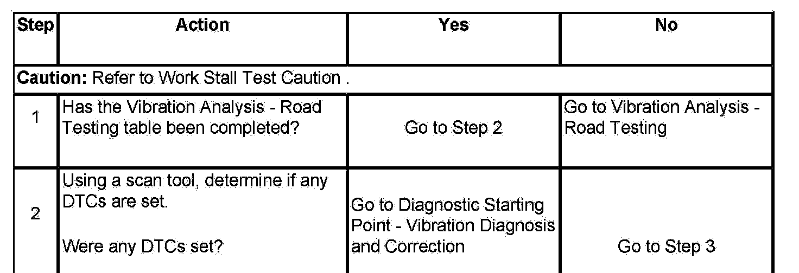
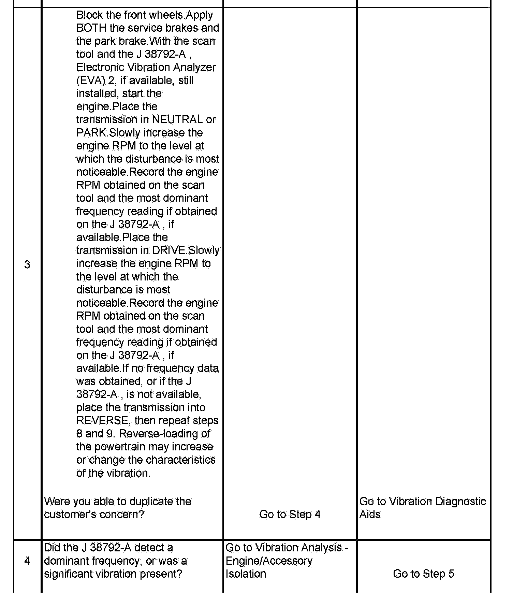
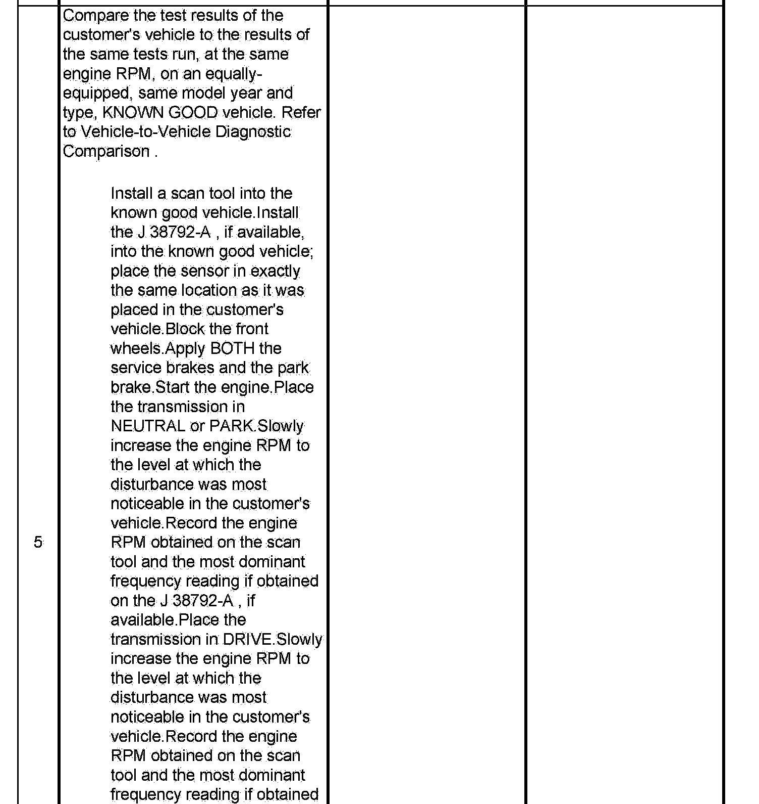
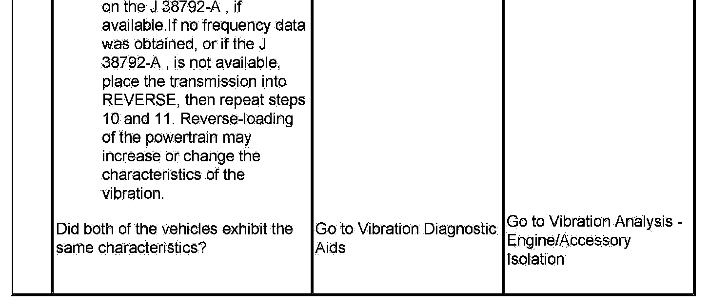

Vibration Analysis - Engine
Vibration Analysis - Engine
Test Description
The numbers below refer to the step numbers on the diagnostic table.
2. If powertrain related DTCs are present, there may be a powertrain performance condition present which could be a contributing cause to the customer's concern.
5. Making comparisons of the customer's vehicle with an equally equipped, same model year and type, KNOWN GOOD vehicle will help determine if certain disturbances may be characteristic of a vehicle design.



